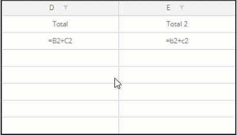
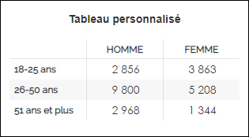

Insérer un tableau personnalisé
Les tableaux personnalisés permettent des créer des analyses avancées où vous pouvez définir des profils qui viendront agir sur les variables à afficher dans vos lignes et colonnes. Les profils peuvent être directement définis à partir de vos variables, mais également à l’aide de script.
Afin de créer un tableau personnalisé, il faut passer le curseur sur le bouton d’ajout d’un nouvel élément (Bouton  ) et sélectionner Tableau personnalisé.
) et sélectionner Tableau personnalisé.
Après avoir cliqué, une boîte de dialogue s’ouvre, à partir de laquelle vous pourrez personnaliser votre tableau.
En haut du tableau, se trouve une barre horizontale contenant plusieurs boutons qui vous permettent de :

-
Annuler / rétablir une modification.
-
Insérer une colonne à gauche/ à droite et insérer une ligne en haut / en bas.
-
Supprimer les lignes/colonnes sélectionnées.
-
Effacer le(s) profil(s).
-
Mettre en place une unité (ex : €) pour toute une ligne ou une colonne ainsi que définir le nombre de décimales possible.
-
Gérer les options de calculs.
-
Afficher des graphiques en barres dans les cellules (en définissant les valeurs limites si besoin).
-
Décaler les colonnes vers la gauche / la droite et monter / descendre les lignes.
-
Ajouter des lignes d'en-tête, des lignes de titre et fusionner des cellules.
-
Mettre en forme les en-têtes de lignes/colonnes (modifier la police, taille, couleur, etc..).
-
Pré-remplir les lignes ou colonnes en fonction des modalités de vos variables à l'aide du bouton "Ajout d’éléments pré-remplis" (créer autant de lignes/colonnes que de modalités d'une variable).
REMARQUE : En pré-remplissant des lignes ou colonnes en fonction des modalités, un filtre est automatiquement appliqué sur chaque ligne/colonne en fonction de la modalité affichée.
Cellules
Vous pouvez appliquer le contenu d’une cellule à d'autres cellules sur la même ligne ou sur la même colonne, pour ce faire, sélectionnez la cellule en question puis :

Cliquez sur l'image ci-dessus pour un aperçu animé
Pour modifier le contenu d’une cellule, vous devez faire un double clic dessus pour pouvoir rentrer du texte ou cliquer sur le bouton  qui s'affiche pour rentrer un script.
qui s'affiche pour rentrer un script.
Vous trouverez dans l'éditeur de script des informations sur les éléments utilisables, détaillant la fonction, la syntaxe et un exemple, afin de mieux saisir les caractéristiques de ce qui est à votre disposition :

REMARQUE : Le calcul inséré doit être mono-ligne.
Les variables de votre enquête sont également disponibles sur le côté droit de la zone d’édition.
Plus d'informations sur les formules de calculs.
REMARQUE : Si vous souhaitez copier la même formule dans plusieurs cellules successives, il suffit de l'écrire en minuscule. 
Cliquez sur l'image pour un aperçu animé

Profils
Pour définir un profil, il suffit de cliquer sur l’icône « définir un profil » présent dans chaque en-tête de lignes et colonnes.
Lorsqu’un profil est déjà renseigné et valide, vous pouvez toujours cliquer de nouveau sur l’icône pour le modifier ou cliquer sur pour l'effacer.
Les profils permettent d’ajouter des conditions à l’affichage du contenu des cellules.
Dans la zone d’édition, vous pouvez choisir de définir des profils en « multicritères » en reprenant les variables de l’enquête, ou en « expression », où vous définissez vous-même plus précisément vos critères. Dans ce dernier cas, il pourrait par exemple s’agir d’afficher l’objet uniquement dans le cas où la moyenne de la variable est supérieure à 5, il faudrait donc écrire « [Satisfaction].moyenne > 5 ».
Lorsque vous définissez un profil en « multicritères », vous pouvez définir autant de conditions que vous le souhaitez en ajoutant des conditions supplémentaires à l’aide du bouton avec le signe plus  . De la même façon, vous pouvez supprimez une condition à l’aide du bouton avec le signe en croix .
. De la même façon, vous pouvez supprimez une condition à l’aide du bouton avec le signe en croix .
Vous pouvez également supprimer votre profil en haut à droite, toujours à l’intérieur de l’édition de profil.
Lignes et colonnes
Vous pouvez ajouter des lignes et colonnes vierges à l’aide des boutons situés en haut de la fenêtre  .
.
De la même façon, vous pouvez ajouter des lignes et colonnes pré-remplies en fonction des modalités de vos variables, à l’aide du bouton  "Ajout d’éléments pré-remplis".
"Ajout d’éléments pré-remplis".
Choisissez le type puis la variable à utiliser :
-
 Variable statique
Variable statique
Les lignes/colonnes du tableau reprennent les modalités/valeurs de la variable sélectionnée au moment de la création du tableau.
Ces éléments restent figés, même si de nouvelles modalités apparaissent par la suite.
-
Variable dynamique
Les lignes/colonnes du tableau reprennent les modalités/valeurs de la variable sélectionnée. Si de nouvelles modalités/valeurs sont enregistrées au fil du temps, de nouvelles lignes/colonnes seront automatiquement créées.
EXEMPLE : Vous souhaitez créer un tableau personnalisé qui affiche les résultats par année, en ayant la variable "Année" en colonne.
En choisissant "Variable dynamique", le tableau affiche par exemple les colonnes suivantes : 2023 / 2024.
L’année suivante, des répondants remplissent le questionnaire en 2025. La variable "Année" enregistre cette nouvelle valeur.
Résultat : une nouvelle colonne "2025" s’ajoute automatiquement au tableau, sans intervention manuelle.Cette option est particulièrement utile pour suivre des données évolutives dans le temps, comme des années, des mois, des catégories ajoutées progressivement, etc.

D'autres actions peuvent être appliquées sur les en-têtes de lignes/colonnes :
-
Rajouter une unité et définir le nombre de décimales à utiliser en cliquant sur le bouton
 .
. -
Ne pas appliquer les décimales aux valeurs entières.

-
Décaler les colonnes vers la gauche / la droite et monter / descendre les lignes en utilisant les boutons .
-
Ajouter des lignes d'en-tête, des lignes de titre et fusionner des cellules en utilisant les boutons .
-
Supprimer / déplacer la colonne / ligne.
-
Agrandir la taille d'une ligne/colonne en édition pour visualiser le contenu des cellules en entier.
-
Afficher des graphiques en barres dans les cellules (en définissant les valeurs limites si besoin), en cliquant sur le bouton
 .
. -
Modifier la police, taille, couleur, alignement du texte etc...

Une fois que le tableau est paramétré, vous pouvez afficher les variations, appliquer des mises en forme conditionnelles, effectuer un tri personnalisé et afficher un graphique pour l'illustrer.
Vous trouverez ci-dessous des exemples de tableaux personnalisés :
Dans cet exemple nous souhaitons afficher les dépenses moyennes et le lieu de séjour le plus visité en fonction de l'activité pratiquée.

-
Pré-remplir les lignes automatiquement en fonction des modalités de la question "Activités".
-
Insérer la formule "=[Dépense totale].Moyenne" dans les cellules de la colonne "Dépenses" pour avoir les dépenses moyennes.
-
Insérer la formule "=[Lieu de séjour].Mode" dans les cellules de la colonne "Lieu de séjour" pour avoir le lieu de séjour le plus visité.
-
Rajouter l'unité "€" au niveau de la colonne "Dépenses" pour avoir les dépenses moyennes en Euro.


Dans cet exemple nous allons afficher une analyse Importance/Performance conçue avec un tableau personnalisé.

-
Renseigner manuellement, l'intitulé des lignes et colonnes.
-
Insérer la formule "=[V1].moyenne" dans les cellules de la colonne "Performance".
(V1 fait référence à la variable numéro 1), il faut donc rajouter le bon nom/numéro de variable pour chaque ligne.
Dans cet exemple nous avons 4 lignes (4 variables différentes):
-
1ère ligne : =[Dépense hébergement].Moyenne
-
2ème ligne : =[Dépense alimentation].Moyenne
-
3ème ligne : =[Dépense restaurant].Moyenne
-
4ème ligne : =[Dépense loisirs].Moyenne
-
-
Insérer la formule pour obtenir la corrélation entre les variables dépenses (hébergement, alimentation, restaurant, loisirs) et la dépense totale dans les cellules de la colonne "Importance".
-
1ère ligne : =[Dépense hébergement].Corrélation("[Dépense totale]")
-
2ème ligne : =[Dépense alimentation].Corrélation("[Dépense totale]")
-
3ème ligne : =[Dépense restaurant].Corrélation("[Dépense totale]")
-
4ème ligne : =[Dépense loisirs].Corrélation("[Dépense totale]")
-
-
Afficher le graphique Carte.


Dans cet exemple nous allons mettre en place un suivi des régions en affichant le nombre de répondants, le nombre de personnes interrogées, le taux de retour et la note de satisfaction :

Nous allons afficher sur la 1ère ligne les résultats au global puis les résultats par région. Pour ce faire :
-
Pré-remplir les lignes automatiquement en fonction des modalités de la question "Région".
-
Renseigner manuellement l'intitulé des 4 colonnes : Nombre de répondants, nombre de personnes interrogées, taux de retour et note de satisfaction.
-
Mettre en place la formule "=Nombreobservations" dans les cellules de la colonne "Nombre de répondants".
-
Le nombre de personnes interrogées est une donnée que nous allons récupérer depuis un fichier Excel en faisant un copier-coller.
-
Le taux de retour sera calculé en rentrant la formule suivante :
Pour la 1ère ligne : "=B2/C2*100" : Cellule B2 divisée par la cellule C2 multiplié par 100. Il ne vous reste plus qu'à appliquer la formule sur les autres cellules.
Cliquez sur l'image ci-dessus pour un aperçu animé
-
Renseigner la formule "=[Satisfaction].moyenne" dans les cellules de la colonne "Note de satisfaction".


Nous souhaitons afficher l'évolution de la satisfaction par année (les notes des années 2018 et 2019 seront copiées manuellement depuis un fichier Excel).

-
Renseigner manuellement le nom de la ligne et l'intitulé des colonnes ainsi que les notes pour les années 2018 et 2019.
-
Mettre en place la formule de calcul "=[Satisfaction.moyenne]" afin de calculer la note moyenne pour l'année 2020.
-
Valider la construction du tableau puis afficher le graphique.

Pour chaque modalité de la question Mode d'hébergement (Hôtel, camping, location / gîte, amis / famille) on veut, pour la question Satisfaction, deux colonnes avec respectivement :
-
Le nombre de répondants satisfaits (ayant répondu "8" "9" "10").
-
La Satisfaction moyenne (calculée avec le barème défini dans la question).

Mise en place :
-
Pré-remplir les lignes automatiquement en fonction des modalités de la question Mode d'hébergement.
-
Rajouter un titre pour les deux colonnes : Nb satisfaits / Note moyenne.
-
Définir un profil en multicritères pour la colonne NB satisfaits comme suit : Satisfaction parmi "8,9,10".
-
Saisir la formule =[Satisfaction].effectif dans les cellules de la colonne Nb satisfaits et la formule =[Satisfaction].moyenne dans les cellules de la colonne Note moyenne.


On souhaite avoir une répartition du genre (homme/femme) selon l'âge des répondants (3 profils mis en place par tranches d'âge).

Mise en place :
-
Pré-remplir les colonnes automatiquement en fonction des modalités de la question Sexe.
-
Renseigner le nom des trois profils (3 lignes) puis les définir en fonction des tranches d'ages (question Age).
-
Saisir la formule =[Sexe].effectif dans les cellules des colonnes Homme / Femme.